une amap dans un parking ?
l’alimentation locale dans les quartiers populaires
En prônant une consommation alimentaire plus saine et locale, l’AMAP, avec sa capacité de mobilité spatiale et la création de lien social qu’elle engendre, m’a permis, dans ma recherche, d’investir les parkings. Dans les quartiers populaires, ces derniers sont déjà investis par une partie de la communauté, mais il s’agit, en y implantant une AMAP, d’élargir le nombre de personnes qui l’investissent, notamment les femmes, qui y sont totalement absentes. L’enjeu est également d’amener l’AMAP à une mobilité accrue, notamment dans des quartiers populaires, où l’alimentation locale n’est que peu accessible. Ainsi, Tissage Véhiculaire est un système de distribution basé sur la suspension de filets entre des véhicules sur un parking; symbole fort du parking, lieu de rassemblement. Grâce à un trousseau d’accrochage, le filet peut trouver sa place sur n’importe quel véhicule. Les toiles qui peuvent se multiplier avec l’agrandissement de la communauté sont autant de liens créés entre les habitants.
recherche de mémoire-projet, 2016-2017
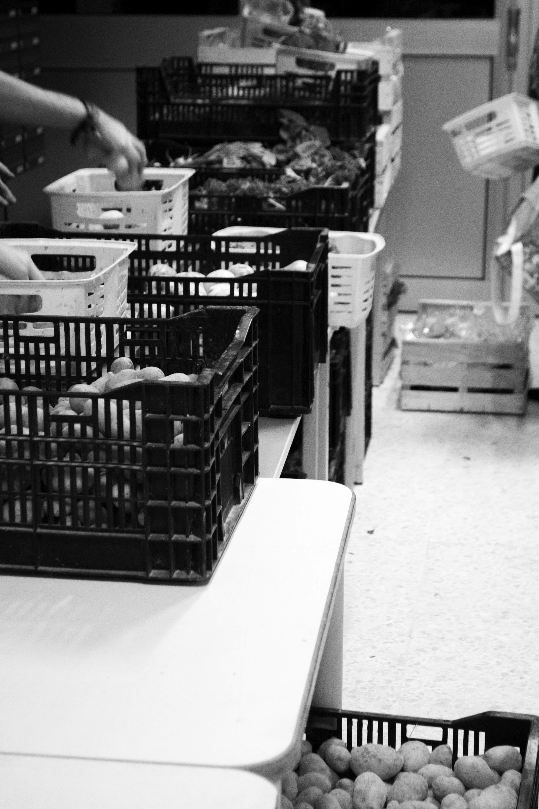
 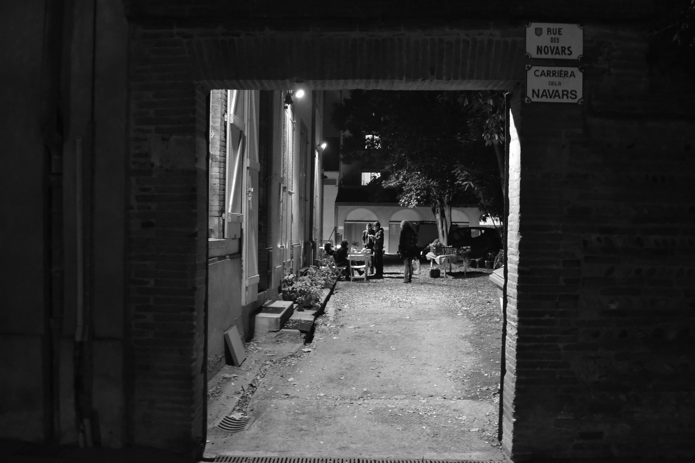
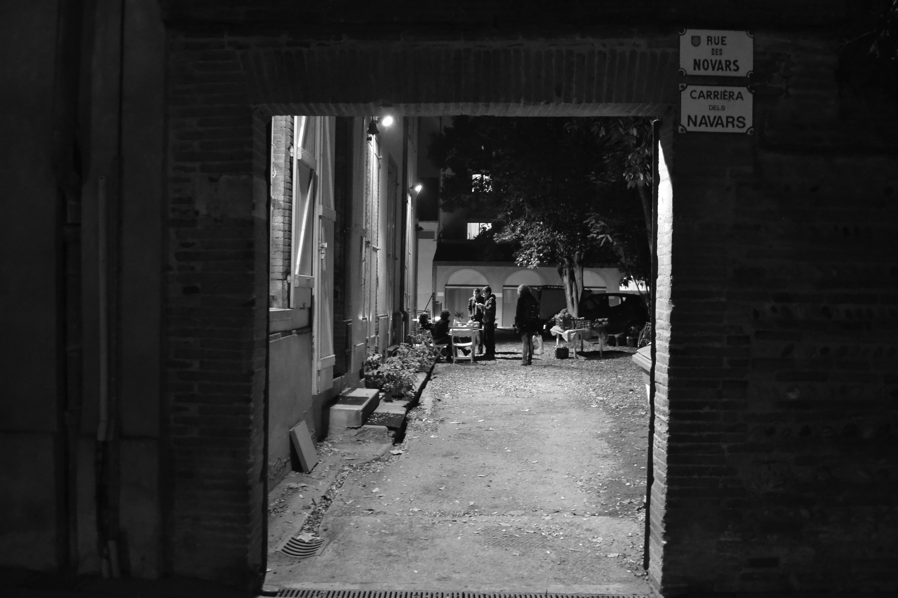

 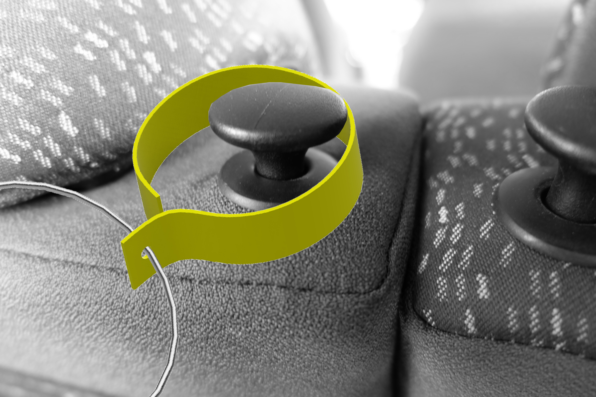
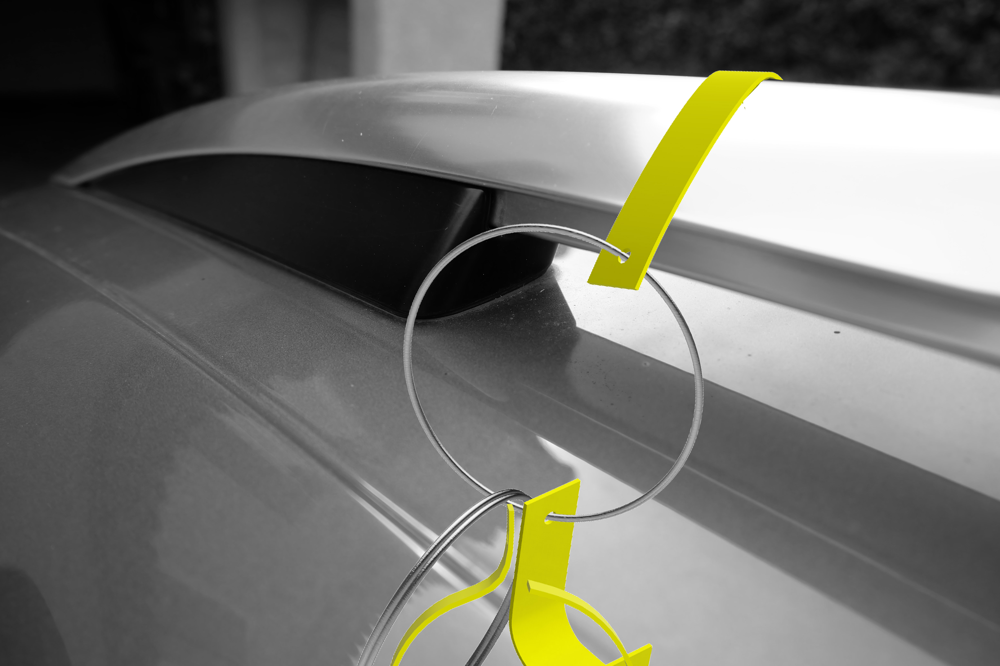
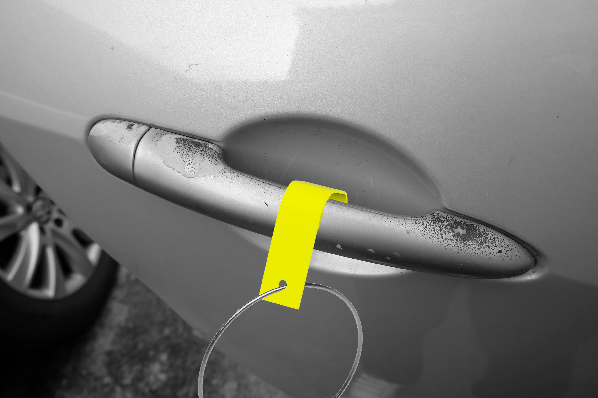
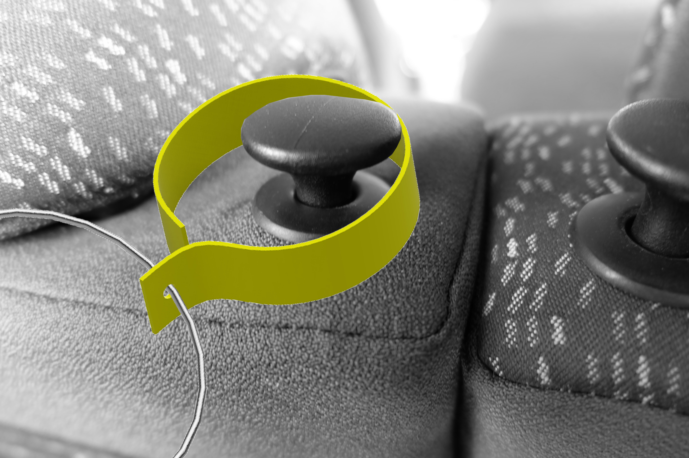
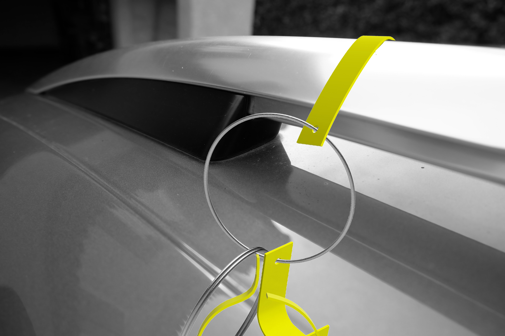
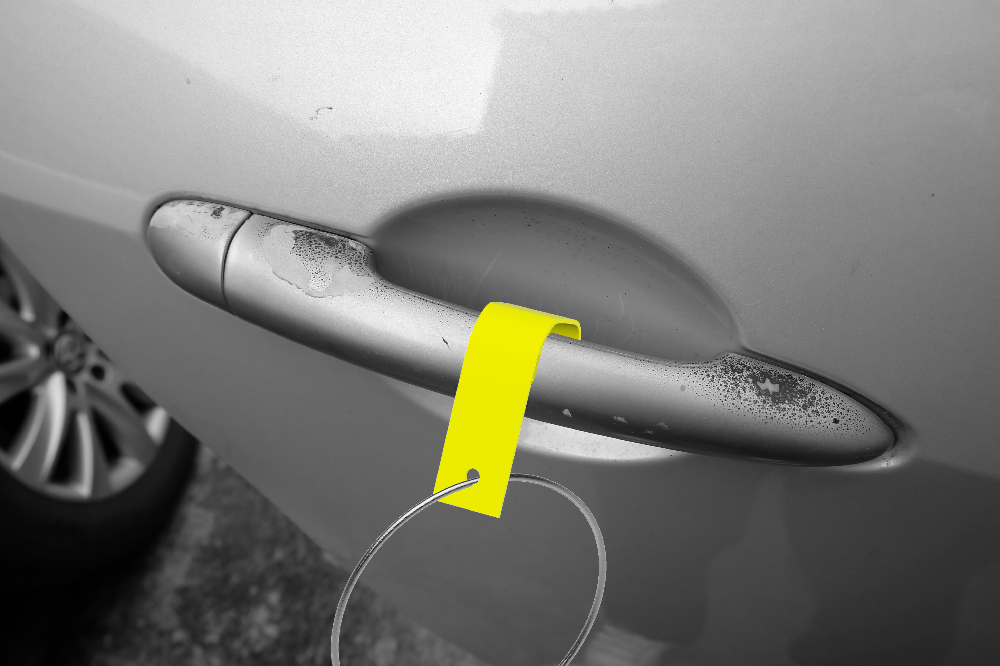
 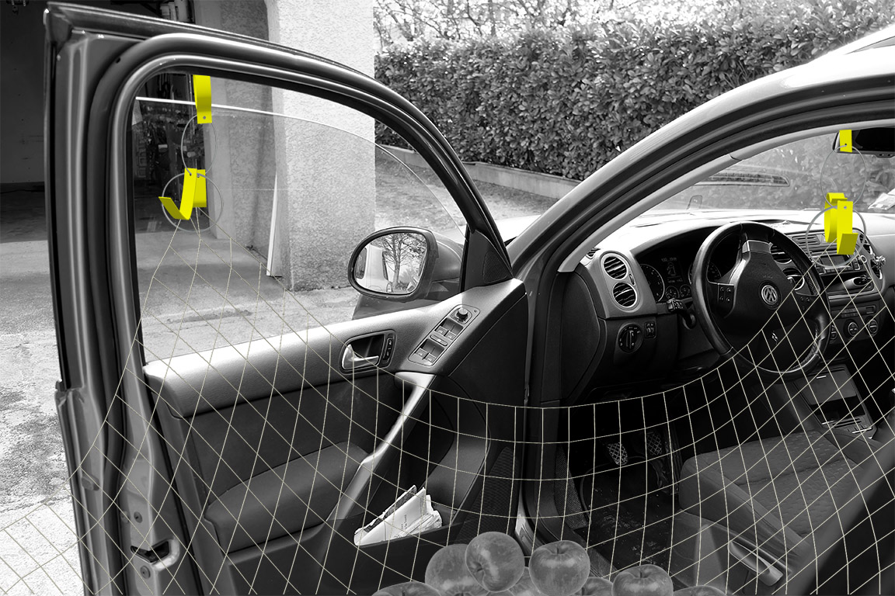
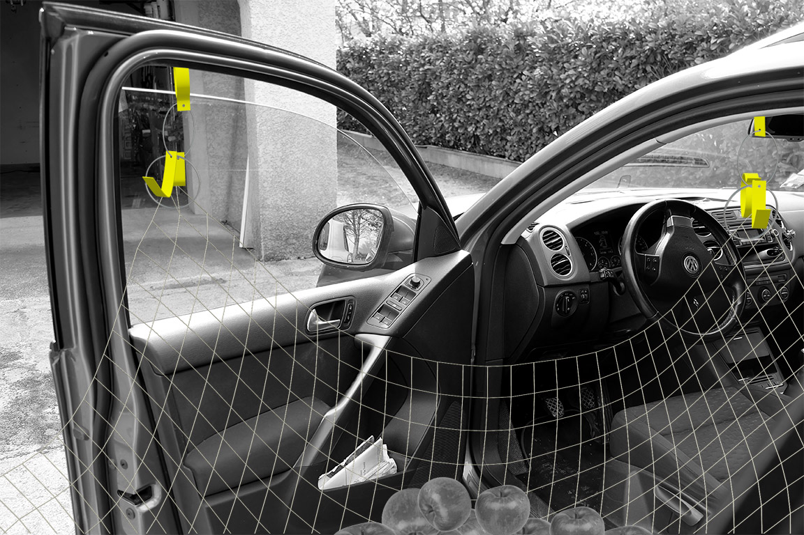

 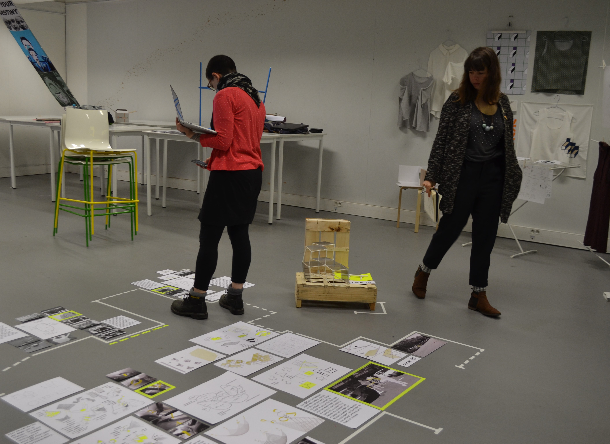
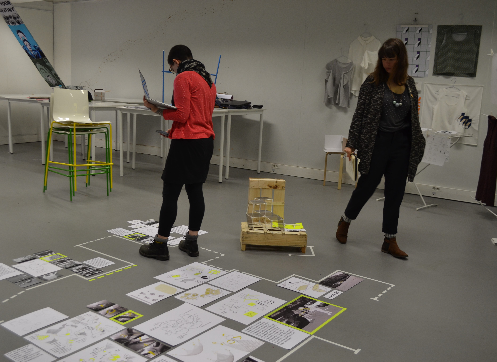